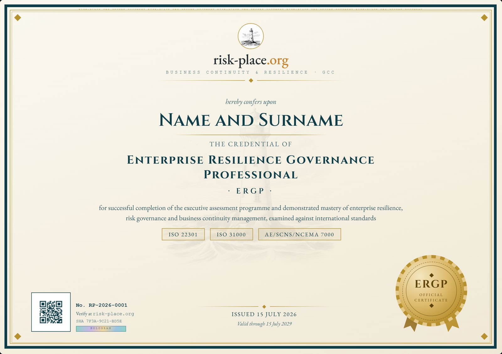
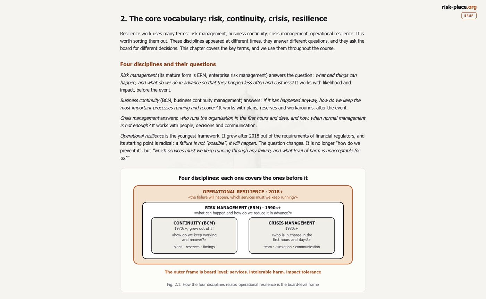
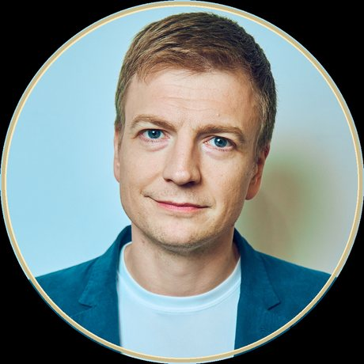
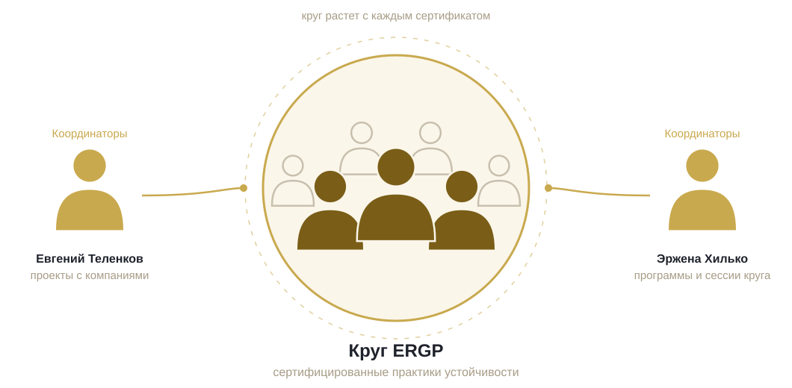

Что это дает вам
Пять вопросов, с которыми приходят участники, и ответ, который дает программа.
- «Мне поручили непрерывность. С чего начать?»Пошаговая рамка: анализ воздействия, планы, учения, метрики, и рабочие шаблоны к каждому шагу.
- «Как говорить с советом директоров о рисках?»Язык аппетита к риску, отчеты и показатели, понятные совету и аудитору.
- «Как подтвердить квалификацию?»Тест после каждого модуля, итоговая работа с разбором экспертом и именной сертификат с уникальным номером.
- «Как сделать, чтобы система жила после внедрения?»Метрики, учения и порядок пересмотра планов, которые держат систему в рабочем состоянии.
- «С кем обсудить сложный случай?»Профессиональное сообщество ERGP: ежеквартальные сессии по реальным случаям и доступ к экзаменаторам.
Почему этим стоит заняться сейчас
Требования к устойчивости растут быстрее, чем число людей, которые умеют ее выстроить.
- Регуляторы ждут доказательств.С 24 августа 2026 года для объектов критической инфраструктуры несвоевременное восстановление после атаки стало основанием для временного управления. Принятые меры нужно подтверждать документами.Коммерсантъ, 27.08.2026
- Атаки бьют по процессам.В 98% атак шифровальщиков и вайперов нарушались основные бизнес-процессы, и отвечать за восстановление приходится не только ИТ.Positive Technologies, Ведомости, 14.10.2026
- Начать можно сегодня.Старт в любой день, доступ на шесть месяцев: курс проходится без отрыва от работы.
Для кого
Для тех, кто отвечает за устойчивость компании или помогает ее выстроить.
- Риск-менеджер, руководитель ИБ или ИТ.Которому поручили непрерывность бизнеса или переход КИИ на российские ПАК.
- Руководитель.Который отвечает за устойчивость перед советом директоров.
- Консультант.Которому нужна системная рамка и рабочие шаблоны.
Программа: 6 модулей, 123 главы
Каждый модуль завершается тестом и рабочим артефактом, который остается у вас.
Финал программы — итоговая работа: отчет об устойчивости своей организации на 3-5 страниц с разбором у эксперта на онлайн-встрече.
- 0123 главыУправление устойчивостью и совет директоровКак устроено управление устойчивостью на верхнем уровне компании. Аппетит к риску прерываний и порядок его утверждения советом директоров, архитектура комитетов и делегирование полномочий, три линии защиты и роль директора по рискам.Артефакт: политика управления устойчивостью и карта органов управления
- 0220 главОт системного управления рисками к управлению устойчивостью бизнесаСвязываем управление рисками с непрерывностью бизнеса: ISO 31000 и реестр рисков, ключевые индикаторы риска и раннее предупреждение, сценарный анализ и стресс-тесты, использование ИИ для мониторинга рисков.Артефакт: реестр рисков устойчивости с индикаторами
- 0320 главАнализ воздействия и экономика восстановленияПереводим устойчивость на язык денег: анализ воздействия на бизнес (BIA), максимально допустимый простой, целевое время и целевая точка восстановления (RTO/RPO), стоимость дня простоя и инвестиционное обоснование мер.Артефакт: BIA с обоснованными целевыми показателями
- 0420 главКризисное управление и принятие решенийЧто делать, когда риск сработал: кризисный штаб и эскалация, коммуникации в кризис, решения под давлением, программа учений и отчеты по ним.Артефакт: план кризисного реагирования и сценарий учения
- 0520 главРегуляторные требования к устойчивости: понимать и применятьISO 22301 в глубину, включая ГОСТ Р ИСО 22301. Международный слой: DORA (ЕС), режим операционной устойчивости Банка Англии, требования регуляторов Залива. Российский слой: требования к КИИ и технологическая независимость значимых объектов. Главный навык — закрывать несколько наборов требований одной системой.Артефакт: матрица соответствия требованиям
- 0620 главЗаверение, отчетность и зрелостьКак показать руководству и аудитору, что система работает: панель показателей устойчивости, отчет для совета директоров, готовность к аудиту, модель зрелости.Артефакт: панель показателей и шаблон отчета для руководства
Как устроена проверка знаний
Четыре ступени: от самопроверки после каждой части до именного сертификата.
- Самопроверка после каждой части.Блок вопросов, который открывает следующий шаг.
- Тест после каждого модуля.8 вопросов, проходной балл 6; вопросы перемешиваются при каждой попытке.
- Итоговая работа.Отчет об устойчивости своей организации на 3-5 страниц с разбором на онлайн-встрече с экспертом.
- Именной сертификат ERGP.С уникальным номером, по итогам всей программы.
Сертификат, который можно проверить
Итог программы — именной номерной сертификат ERGP (Enterprise Resilience Governance Professional). Подлинность проверяется по номеру.

- Именной, с уникальным номером.Выдается на имя участника, у каждого сертификата собственный номер.
- Выдается по итогам всей программы.После всех шести тестов и разбора итоговой работы.
- Проверяется за секунды.Работодатель вводит номер или сканирует код с документа и видит имя владельца, программу и срок действия.
Живые скриншоты курса
Настоящие главы программы, ровно так их видит участник: авторский текст, схемы и вопросы для самопроверки.
На скриншотах английская редакция. Программа полностью доступна и в русской редакции: весь текст, тесты и итоговая работа.

Нажмите на скриншот, чтобы увеличить.
Стоимость и что входит
После оплаты письмо с входом в программу придет на вашу почту в течение 24 часов. Email вы укажете на странице оплаты.
- Все 6 модулей и 123 главы.С обновлениями, доступ к материалам на 6 месяцев.
- Шесть тестов и итоговая работа.С разбором на онлайн-встрече.
- Именной сертификат ERGP.С уникальным номером.
- Оплата по счету.Напишите на info@risk-place.ru, пришлем счет для оплаты от юрлица.
- Групповой доступ для команды.Формат и условия обсуждаем отдельно.
Руководство программы
Программу ведут практики, которые сами строили системы управления рисками и непрерывности в крупных компаниях.
Директор по рискам American Express Bank и оператора его платежной системы в 2010–2024 годах, председатель комитета по рискам. Построила систему управления рисками в двенадцати бизнес-подразделениях по модели трех линий защиты без замечаний аудита, вела ВПОДК по Базелю III, самооценку рисков и контролей по пятнадцати ключевым процессам и план непрерывности с ежегодными учениями. Ранее руководитель рисков Bank of Cyprus Russia, корпоративные финансы в Deloitte, аудит в Ernst & Young. Отвечает за устройство курсов, расписание потоков и опыт участников во всех наших программах и курирует профессиональное сообщество ERGP.

Пятнадцать лет во главе риск-функций крупных компаний. В «Норникеле» построил непрерывность бизнеса с нуля. Автор более 30 планов непрерывности. Директор по рискам нефтехимического мегапроекта стоимостью 20 млрд долларов (АГХК, СИБУР) с более чем 200 индикаторами строительных рисков. Риск-консалтинг в Ernst & Young, риск-менеджмент в «Билайн» и «Роснефти». Заместитель председателя технического комитета 010 «Менеджмент риска» Росстандарта. Подготовил более 800 специалистов.
Профессиональное сообщество ERGP
Сертификат это вход: сдав ERGP, вы входите в сообщество сертифицированных практиков, которое координируют основатели. Сообщество одно на русскую, английскую и арабскую редакции программы и растет с каждым выданным сертификатом.
Куратор сообщества Эржена Хилько, проекты координирует Евгений Теленков. Подробнее о сообществе →

- Знание раньше рынка.Ежеквартальная сессия сообщества по одному реальному случаю; новые модули и разборы требований регуляторов до публикации.
- Люди, которым можно позвонить.Закрытый каталог членов, доступ к экзаменаторам.
- Реальные проекты.Мы назначаем членов сообщества на проекты компаний: аудит, дашборд, построение системы. Члены со стажем становятся экзаменаторами.
Частые вопросы
Что такое ERGP?
ERGP — Enterprise Resilience Governance Professional, онлайн-курс и сертификация по управлению устойчивостью бизнеса. Название международное, потому что программа издается на трех языках и выходит также для международного рынка.
Сколько времени занимает курс?
Вы проходите программу ERGP в своем темпе, старт в любой день. Доступ к материалам открыт 6 месяцев с даты оплаты — этого хватает с запасом, чтобы пройти все шесть модулей, ответить на вопросы самопроверки и вернуться к нужным главам перед итоговой работой.
Что за сертификат я получу?
Именной сертификат ERGP с уникальным номером — сертификат risk-place о прохождении программы, это не государственный документ. Его ценность — в проверке знаний, которая за ним стоит: шесть тестов и разбор итоговой работы. Подлинность проверяется по номеру.
Чем ERGP отличается от вебинаров и однодневных курсов?
Это системная программа с проверкой знаний: после каждой части — самопроверка, после каждого модуля — тест, в конце — итоговая работа с разбором на онлайн-встрече.
Можно ли пройти командой?
Да, есть групповой доступ для команды. Напишите нам — обсудим формат и условия.
Как оплатить от юрлица?
По счету. Напишите на info@risk-place.ru — пришлем счет для оплаты от организации.
На каких языках издается программа?
Русский, английский и арабский. Курс ERGP создавался для международного рынка и издается также для стран Залива. Международная версия — risk-place.org.
Как начать
Три шага до сертификата. Перед оплатой можно посмотреть курс по Zoom.
- 01Оплатите программуОнлайн по ссылке или по счету для организации.
- 02Получите доступПисьмо с входом в программу придет на почту в течение 24 часов.
- 03Пройдите модули в своем темпеТест после каждого модуля, итоговая работа с разбором на онлайн-встрече, именной сертификат.
Обсудить вашу задачу
Оставьте контакты. Ответим в течение рабочего дня и договоримся о звонке или встрече в Zoom. Если нужно, подпишем NDA до разговора.